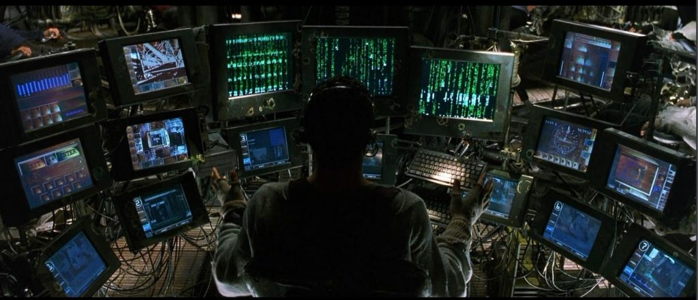
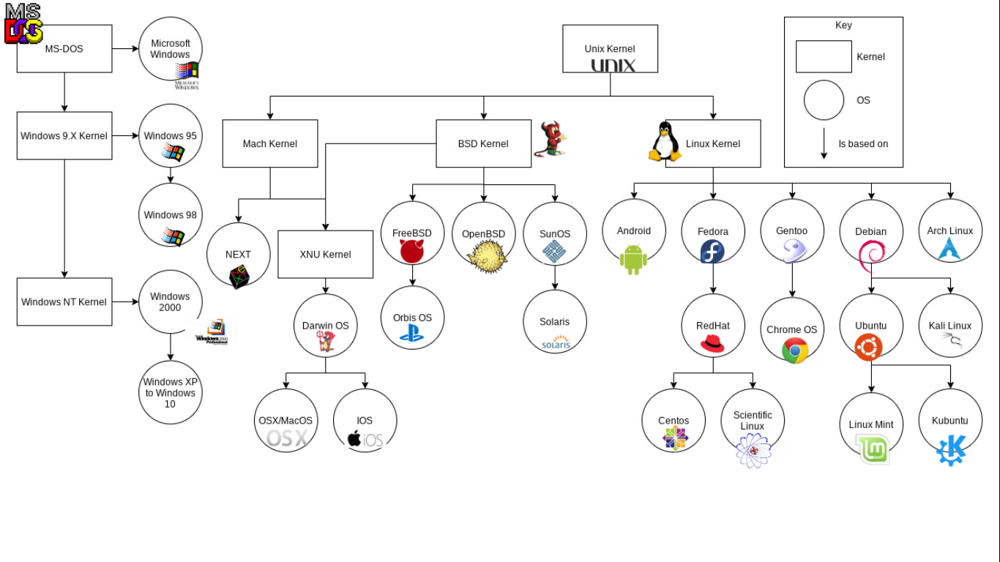

flowchart LR
H[Hardware]
subgraph OS[Operating System]
K[Kernel]
end
S[Shell]
subgraph T[Terminal]
C[Command Line]
end
T --- S --- OS --- H
%% Single hue (blue), different lightness
classDef l1 fill:#eaf2fb,stroke:transparent,color:#000
classDef l2 fill:#d0e2f2,stroke:transparent,color:#000
classDef l3 fill:#9ecae1,stroke:transparent,color:#000
classDef l4 fill:#6baed6,stroke:transparent,color:#000
%% Apply styles
class H l1
class OS l2
class K l4
class S l2
class T l2
class C l4
%% Remove subgraph borders
style OS fill:#d0e2f2,stroke-width:0px
style T fill:#d0e2f2,stroke-width:0px
Terminal
“Graphical user interfaces make easy tasks easy, while command line interfaces make difficult tasks possible.”
William Shotts, The Linux Command Line: A Complete Introduction
If there is one software skill you had to learn, it would be working with a terminal. It is ubiquitous! It has been around since 1970s and is likely to stay, unlike other tools. Thus, investing your time learning how to use it properly is worth it.
A Bit of Pop Wisdom
Have you watched the movie The Matrix? While the protagonists are inside the Matrix, operator assists them in real time monitoring what is happening and where should they go. The operator’s setup can be seen below.

Do you notice anything unsual abou this set up? Look closely. The operator is not using a mouse. He is using a terminal to monitor the Matrix. That alone should convice you of the power of the terminal. Jokes aside, you will immensely benefit from learning how to use it. It may seem intimidating at first (and it will), but with practice, you’ll find it to be an invaluable skill.
Integrated Terminal
Opening a terminal varies depending on your operating system. On macOS, you can find the Terminal application in Applications/ → Utilities/. On Linux, you might find it in your applications menu, or you can press Ctrl+Alt+T on many systems. On Windows, you’ll want to use Ubuntu as part of the Windows Subsystem for Linux (WSL).
We will be interacting with a terminal inside VS Code. Start VS Code and open a folder or workspace. Open the terminal by selecting View > Terminal from the menu bar, or by pressing the Ctrl/Cmd+` keyboard shortcut. Based on your operating system configuration, the terminal opens with a default shell like Bash, PowerShell, or Zsh. The shell’s working directory starts at the root of the workspace folder.
Once you have your terminal open, you’ll see a prompt—usually something like user@computer:~$ or just $ in Ubuntu or % on macOS. This is where you type your commands.
Let’s start with some basic exploration. Try typing a few simple commands to get a feel for how the terminal responds. Don’t worry about what they do yet—we’ll explain them shortly.
First, try typing gibberish to see what happens:
sfkagifvnbasdYou should see an error message saying the command was not found. Good! The terminal is working.
Now try some real commands:
dateThis shows you the current date and time. Next:
uptimeThis tells you how long your computer has been running. Try:
dfThis shows you disk space usage. Another useful one:
whoamiThis tells you which user account you’re logged in as. Another useful command:
which lsThe which command tells you the location of a program on your system. This is helpful when you want to know where a command is installed or verify that a program is available. And finally:
exitThis closes your terminal session.
Don’t worry if you don’t understand what these commands do in detail—the important thing is that you’ve confirmed the terminal is working and ready for the next steps.
Exploring Files
Now that you can navigate around, let’s learn how to explore and examine files. There are several useful commands for working with files.
Viewing file contents
To see the contents of a file, you can use the cat (concatenate) command:
cat /etc/hostnameThis displays the contents of the file directly in the terminal.
For larger files, you might want to use a pager to view them one screen at a time. The less command is perfect for this:
less /etc/profileInside less, you can use arrow keys to scroll, Page Up/Page Down for larger jumps, and q to quit.
Options and arguments
Most commands accept options (also called flags or switches) and arguments. The general format is:
command -options argumentsOptions typically start with a hyphen (-) or double hyphen (--). Let’s see this in action:
ls -lThe -l option shows a “long” listing with more details. Try:
ls -tThe -t option sorts files by modification time. You can combine multiple options:
ls -ltThis combines -l and -t to show details sorted by time.
Important rules
Try to avoid any spaces in your directory and file names. Shell interprets space as separator between options or arguments. Space in names will most likely break programs, producing errors.
You can use spaces by including names in parentheses or quotes, but that’s an unnecessary complication.
Commands are case sensitive. ls is not the same as LS, Ls, or lS. Try it yourself!
Creating Directories and Files
Principles to create files and directories are very similar but, as usual, have their own terminiology and quirks. We will first look at directories since they are conceptually easier to compehed.
NoteFolder vs directory
Another terminology difference from Windows. Funilly, file is a file.
Directories
Lets create our first object using the terminal. While in your home directory ~, type:
mkdir oistCheck with ls what happened. mkdir stands for make directory.
Looks nice! Let’s go inside.
cd oistAnd, check check it out.
lsKind of boring here. There is nothing inside. Let’s make some more directories inside.
mkdir lab1 lab2 lab3 lab4 lab5There’s something a little different about that command. So far we’ve only seen commands that work on their own (cd, pwd) or that have a single item afterwards (cd -, cd ~/Desktop/). But this time we’ve added five things after the mkdir command. Those things are referred to as parameters or arguments, and different commands can accept different numbers of arguments. The mkdir command expects at least one argument, whereas the cd command can work with zero or one, but no more. See what happens when you try to pass the wrong number of parameters to a command:
mkdir
cd /etc/ ~/Desktop/Notice that mkdir created all the folders in one directory. It didn’t create lab3/ inside lab2/ inside lab1/, or any other nested structure. But sometimes it’s handy to be able to do exactly that, and mkdir does have a way:
mkdir -p lab4/levelE/48
lsYou can try to run without -p and see which error message you get.
mkdir lab5/levelD/23I find this behaviour annoying. The same goes for creating files in non-existent subdirectories but I am sure there is a good reason behind such restriction.
cd lab4
ls
cd levelE
ls
cd ../..The “-p” that we used is called an option or a switch (in this case it means “create the parent directories, too”). Options are used to modify the way in which a command operates, allowing a single command to behave in a variety of different ways. Unfortunately, due to quirks of history and human nature, options can take different forms in different commands. You’ll often see them as single characters preceded by a hyphen (as in this case), or as longer words preceded by two hyphens. The single character form allows for multiple options to be combined, though not all commands will accept that. And to confuse matters further, some commands don’t clearly identify their options at all, whether or not something is an option is dictated purely by the order of the arguments! You don’t need to worry about all the possibilities, just know that options exist and they can take several different forms. For example the following all mean exactly the same thing:
# These commands are equivalent
mkdir --parents --verbose lab5/levelDE
mkdir -p --verbose lab5/levelDE
mkdir -p -v lab5/levelDE
mkdir -pv lab5/levelDEFiles
Many labs, right? Can we keep a log of them? ls just printed them but can we store this command output in a file? That’s where redirecton comes into play.
Suppose we wanted to capture the output of that command as a text file that we can look at or manipulate further. All we need to do is to add the greater-than character (“>”) to the end of our command line, followed by the name of the file to write to:
ls > lab.logThis time there’s nothing printed to the screen, because the output is being redirected to our file instead. If you just run ls on its own you should see that the lab.log file has been created. We can use the cat command to look at its content:
cat lab.logOkay, so it’s not exactly what was displayed on the screen previously, but it contains all the same data, and it’s in a more useful format for further processing.
Let’s look at another command, echo:
echo "VISION, CHALLENGES, INNOVATION"Yes, echo just prints its arguments back out again (hence the name). But combine it with a redirect, and you’ve got a way to easily create small files. Let’s redirect these words into a file that will represent the Prof. Sydney Brenner statue located at the Center Court.
echo "VISION, CHALLENGES, INNOVATION" > sydney_brenner.statue
cat sydney_brenner.statue
ImportantFile extension
Linux-type systems do not care about file extensions. Files can have no extensions at all and be absolutely fine. Try redirecting the words output to file named sydney_brenner and see if you can inspect it.
We have one statue but why stop here? It is not improbable that Prof. Svante Pääbo will get his statute at OIST in the future. For his statue engraving we will choose something more personal.
echo "I really wanted to discover mummies, like Indiana Jones." > svante_paabo.statue
cat svante_paabo.statueHowever, cat is more than just a file viewer - its name comes from ‘concatenate’, meaning “to link together”. If you pass more than one filename to cat it will output each of them, one after the other, as a single block of text:
cat sydney_brenner.statue svante_paabo.statueWhere you want to pass multiple file names to a single command, there are some useful shortcuts that can save you a lot of typing if the files have similar names. A question mark (“?”) can be used to indicate “any single character” within the file name. An asterisk (“*”) can be used to indicate “zero or more characters”. These are sometimes referred to as “wildcard” characters. A couple of examples might help, the following commands all do the same thing:
cat sydney_brenner.statue svante_paabo.statue
cat *.statueThat is where file extension .statue that we came up with is useful. We can match all statue files no matter how many there are. lab.log has been omitted. This simple syntax makes selective manipulation of files an easy task.
As you might have guessed, this capability also means that you need to escape file names with “?” or “*” characters in them, too. It’s usually better to avoid any punctuation in file names if you want to manipulate them from the command line.
We have not used ? character above. A somewhat artificial example with our current setup would be to list only the lab directories and their subdirectories:
ls lab?Thus we only look at what is inside the directories that start with “lab”.
Going back to the statues. Let’s join all our files together into a single new file, then view it:
cat *.statue > nobel_motivation.txt
cat nobel_motivation.txtWhat do you think will happen if we run those two commands a second time? Will the computer complain, because the file already exists? Will it append the text to the file, so it contains two copies? Or will it replace it entirely? Give it a try to see what happens, but to avoid typing the commands again you can use the Up Arrow and Down Arrow keys to move back and forth through the history of commands you’ve used. Press the Up Arrow a couple of times to get to the first cat and press Enter to run it, then do the same again to get to the second.
As you can see, the file looks the same. That’s not because it’s been left untouched, but because the shell clears out all the content of the file before it writes the output of your cat command into it. Because of this, you should be extra careful when using redirection to make sure that you don’t accidentally overwrite a file you need. If you do want to append to, rather than replace, the content of the files, double up on the greater-than character “>>”:
cat *.statue >> nobel_motivation.txt
echo 'I want my statue too!' >> nobel_motivation.txt
cat nobel_motivation.txtRepeat the first cat and the echo a few more times, using the Up Arrow for convenience until your text document is so large that it won’t all fit in the terminal at once when you use cat to display it. In order to see the whole file we now need to use a different program, called a pager (because it displays your file one “page” at a time). The standard pager of old was called more, because it puts a line of text at the bottom of each page that says “–More–” to indicate that you haven’t read everything yet. These days there’s a far better pager that you should use instead: because it replaces more, the programmers decided to call it less.
less nobel_motivation.txtWhen viewing a file through less you can use the Up Arrow, Down Arrow, Page Up, Page Down, Home and End keys to move through your file. Give them a try to see the difference between them. When you’ve finished viewing your file, press q to quit less and return to the command line.
TipGood naming practice
When you consider both case sensitivity and escaping, a good rule of thumb is to keep your file names all lower case, with only letters, numbers, underscores and hyphens. For files there’s usually also a dot and a few characters on the end to indicate the type of file it is (referred to as the “file extension”). This guideline may seem restrictive, but if you end up using the command line with any frequency you’ll be glad you stuck to this pattern.
If we want to move Sydney to show him the latest lab, Lab 5, how do we do that? Also, is the file we created created empty? How can we check that? ls will not work. We will see how files can be manipulated in the next section.
Manipulating Files
Now that we’ve got a few files, let’s look at the sort of day-to-day tasks you might need to perform on them. In practice you’ll still most likely use a graphical program when you want to move, rename or delete one or two files, but knowing how to do this using the command line can be useful for bulk changes, or when the files are spread amongst different folders. Plus, you’ll learn a few more things about the command line along the way.
Let’s begin by putting our svante_paabo.statue file into our lab1/ directory, using the mv (move) command:
mv svante_paabo.statue lab1You can confirm that the job has been done by using ls to see that it’s missing from the working directory, then cd lab1/ to change into lab1/, ls to see that it’s in there, then cd .. to move the working directory back again. Or you could save a lot of typing by passing a path directly to the ls command to get straight to the confirmation you’re looking for:
ls lab1Now suppose it turns out that file shouldn’t be in lab1/ after all. Let’s move it back to the working directory. We could cd into lab1/ then use mv svante_paabo.statue .. to say “move svante_paabo.statue into the parent directory”. But we can use another path shortcut to avoid changing directory at all. In the same way that two dots (..) represents the parent directory, so a single dot (.) can be used to represent the current working directory. Because we know there’s only one file in lab1/ we can also just use * to match any filename in that directory, saving ourselves a few more keystrokes. Our command to move the file back into the working directory therefore becomes this (note the space before the dot, there are two parameters being passed to mv):
mv lab1/* .The mv command also lets us move more than one file at a time. If you pass more than two arguments, the last one is taken to be the destination directory and the others are considered to be files (or directories) to move. Let’s use a single command to move lab.log, all our *.statue files and lab2/ into lab3/ (now, it’s getting trippy). There’s a bit more going on here, but if you look at each argument at a time you should be able to work out what’s happening:
mv lab.log *.statue lab2 lab3
ls
ls lab3Let’s keep lab.log in lab3/ but everything else out:
mv lab3/lab? lab3/*.statue .Renaming files
The mv command doesn’t just move files between directories—it’s also used to rename them. When you move a file to the same directory but give it a new name, you’re effectively renaming it.
For example, let’s rename one of our statue files:
mv sydney_brenner.statue brenner_sydney.statue
cat brenner_sydney.statueThe file has been renamed, not moved to a different location.
Copying files
Sometimes you want to create a duplicate of a file. This is where the cp (copy) command comes in:
cp brenner_sydney.statue sydney_brenner.statue
ls *.statueYou now have two files: the original and the last-name-first copy. The cp command can also work with directories, but you need to use an option to do so. To copy an entire directory and all its contents, use the -r option (which stands for “recursive”):
cp -r lab4 lab0
lsThis creates a complete copy of lab4/ and all the files inside it, called lab0/.
Deleting files and directories
To remove files, use the rm (remove) command. Be careful with this—once deleted, files are generally gone for good!
rm brenner_sydney.statue
ls *.statueTo be honest, there is only one Lab0. To remove a directory, add the -r option:
rm -r lab0
ls
CautionWarning: rm is permanent
Unlike moving files to a trash or recycle bin on a graphical interface, rm permanently deletes files. There is no undo! Always double-check your command before pressing Enter.
A Bit of Plumbing
Today’s computers and phones have the sort of graphical and audio capabilities that our 70s terminal users couldn’t even begin to imagine. Yet still text prevails as a means to organise and categorise files. Whether it’s the file name itself, GPS coordinates embedded in photos you take on your phone, or the metadata stored in an audio file, text still plays a vital role in every aspect of computing. It’s fortunate for us that the Linux command line includes some powerful tools for manipulating text content, and ways to join those tools together to create something more capable still.
Let’s start with a simple question. How many lines are there in your combined.txt file? The wc (word count) command can tell us that, using the -l switch to tell it we only want the line count (it can also do character counts and, as the name suggests, word counts):
wc -l nobel_motivation.txtSimilarly, if you wanted to know how many files and folders are in your home directory, and then tidy up after yourself, you could do this:
ls ~ > home_file_list.txt
wc -l home_file_list.txt
rm home_file_list.txtThat method works, but creating a temporary file to hold the output from ls only to delete it two lines later seems a little excessive. Fortunately the Unix command line provides a shortcut that avoids you having to create a temporary file, by taking the output from one command (referred to as standard output or STDOUT) and feeding it directly in as the input to another command (standard input or STDIN). It’s as though you’ve connected a pipe between one command’s output and the next command’s input, so much so that this process is actually referred to as piping the data from one command to another. Here’s how to pipe the output of our ls command into wc:
ls ~ | wc -lNotice that there’s no temporary file created, and no file name needed. Pipes operate entirely in memory, and most Unix command line tools will expect to receive input from a pipe if you don’t specify a file for them to work on. Looking at the line above, you can see that it’s two commands, ls ~ (list the contents of the home directory) and wc -l (count the lines), separated by a vertical bar character (|). This process of piping one command into another is so commonly used that the character itself is often referred to as the pipe character, so if you see that term you now know it just means the vertical bar.
Note that the spaces around the pipe character aren’t important, we’ve used them for clarity, but the following command works just as well, this time for telling us how many items are in the /etc directory:
ls /etc | wc -lPhew! That’s quite a few files. If we wanted to list them all it would clearly fill up more than a single screen. As we discovered earlier, when a command produces a lot of output, it’s better to use less to view it, and that advice still applies when using a pipe (remember, press q to quit):
ls /etc | lessGoing back to our own files, we know how to get the number of lines in combined.txt, but given that it was created by concatenating the same files multiple times, I wonder how many unique lines there are? Unix has a command, uniq, that will only output unique lines in the file. So we need to cat the file out and pipe it through uniq. But all we want is a line count, so we need to use wc as well. Fortunately the command line doesn’t limit you to a single pipe at a time, so we can continue to chain as many commands as we need:
cat nobel_motivation.txt | uniq | wc -lThat line probably resulted in a count that’s pretty close to the total number of lines in the file, if not exactly the same. Surely that can’t be right? Lop off the last pipe to see the output of the command for a better idea of what’s happening. If your file is very long, you might want to pipe it through less to make it easier to inspect:
cat nobel_motivation.txt | uniq | lessIt appears that very few, if any, of our duplicate lines are being removed. To understand why, we need to look at the documentation for the uniq command. Most command line tools come with a brief (and sometimes not-so-brief) instruction manual, accessed through the man (manual) command. The output is automatically piped through your pager, which will typically be less, so you can move back and forth through the output, then press q when you’re finished:
man uniqBecause this type of documentation is accessed via the man command, you’ll hear it referred to as a “man page”, as in “check the man page for more details”. The format of man pages is often terse, think of them more as a quick overview of a command than a full tutorial. They’re often highly technical, but you can usually skip most of the content and just look for the details of the option or argument you’re using.
The uniq man page is a typical example in that it starts with a brief one-line description of the command, moves on to a synopsis of how to use it, then has a detailed description of each option or parameter. But whilst man pages are invaluable, they can also be impenetrable. They’re best used when you need a reminder of a particular switch or parameter, rather than as a general resource for learning how to use the command line. Nevertheless, the first line of the DESCRIPTION section for man uniq does answer the question as to why duplicate lines haven’t been removed: it only works on adjacent matching lines.
The question, then, is how to rearrange the lines in our file so that duplicate entries are on adjacent lines. If we were to sort the contents of the file alphabetically, that would do the trick. Unix offers a sort command to do exactly that. A quick check of man sort shows that we can pass a file name directly to the command, so let’s see what it does to our file:
sort nobel_motivation.txt | lessYou should be able to see that the lines have been reordered, and it’s now suitable for piping straight into uniq. We can finally complete our task of counting the unique lines in the file:
sort nobel_motivation.txt | uniq | wc -lAs you can see, the ability to pipe data from one command to another, building up long chains to manipulate your data, is a powerful tool, as well as reducing the need for temporary files, and saving you a lot of typing. For this reason you’ll see it used quite often in command lines. A long chain of commands might look intimidating at first, but remember that you can break even the longest chain down into individual commands (and look at their man pages) to get a better understanding of what it’s doing.
Most Linux command line tools include a man page. Try taking a brief look at the pages for some of the commands you’ve already encountered: man ls, man cp, man rmdir and so on. There’s even a man page for the man program itself, which is accessed using man man, of course.
Downloading files from the web
Another powerful command you encountered during the setup process is curl (Client URL). It’s used to transfer data from or to a server, often for downloading files or scripts from the internet:
curl -fsSL https://pixi.sh/install.sh | shThis command downloads the Pixi installation script and pipes it directly to sh (the shell) for execution. Let’s break down the options:
-f- Fail silently on server errors-s- Silent mode (don’t show progress)-S- Show errors even in silent mode-L- Follow redirects if the URL has moved
You can also use curl to download files and save them:
curl -O https://example.com/file.txtThe -O option saves the file with its original name.
Be cautious when piping downloaded scripts directly to a shell interpreter (| sh or | bash). Only do this with scripts from trusted sources, as they will execute with your user privileges. During setup, you used this method with official installation scripts from Pixi and Starship.
The Superuser
We won’t encounter this command too much in this course, but some commands require elevated privileges to run. On Linux systems like Ubuntu, the sudo command allows you to run a command with superuser (administrator) privileges. When you use sudo, you’ll be prompted for your password.
You’ve already used sudo during the setup process when you ran:
sudo apt update && sudo apt upgrade -yThis command updates the package lists and upgrades installed packages on Ubuntu. The apt (Advanced Package Tool) is Ubuntu’s package manager. You can also install new programs:
sudo apt install treeThis would install the tree program from your system’s software repositories. macOS users can use the Homebrew package manager with the brew command to install tree:
brew install treeNote that on macOS, brew typically doesn’t require sudo as it installs to user-writable locations.
Investigate the oist/ directory structure that we have built with:
tree .When using sudo—always understand what a command does before running it with elevated privileges. Never run commands from untrusted sources with sudo, as they could potentially damage your system.
Appendix
Terminology
Any terminology is confusing until you repeat it many times. Starting from the left in the figure below, terminal or more properly terminal emulator is a text-based input/output program that communicates with your computer. You type commands in a command line or a command line interface (CLI). The command is passed to shell which is a command line interpreter (confusingly, it can be abbreviated as CLI as well, but thankfully no one does that). Next, shell talks to operating system (OS). OS is agnostic to hardware and could be run on different physical machines. At the core of any OS is kernel. Finally, kernel talks to the hardware (CPU, GPU, RAM, disk, etc.).
Only reason I give this detail that some times people use these terms interchangeably.
A brief history of operating systems
When you look at most operating systems, you see that most of them stem from UNIX. Then they branch into derivatives like Linux, which is the most prominent “child”. Windows, on the other hand, is isolated from UNIX and only the recent introduction of WSL allowed it to use UNIX-based tools with ease.
